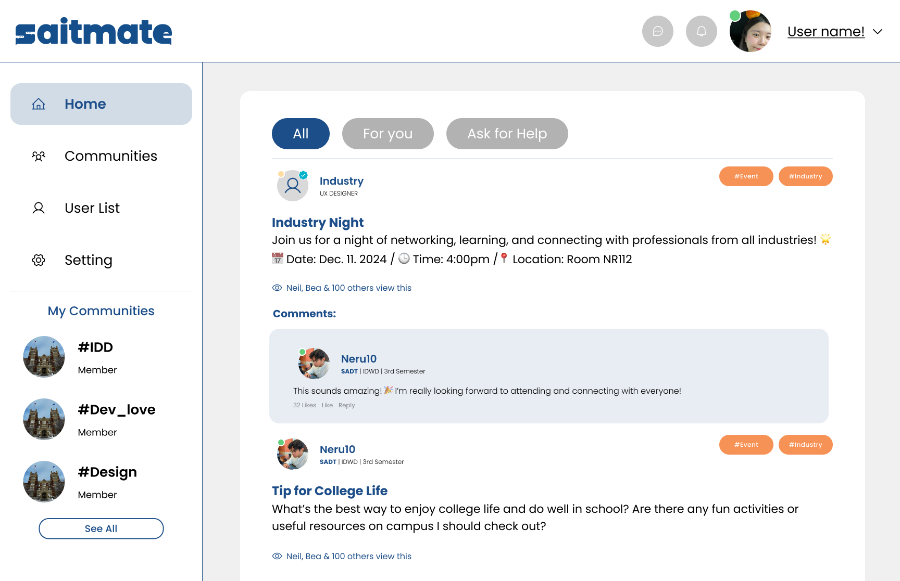
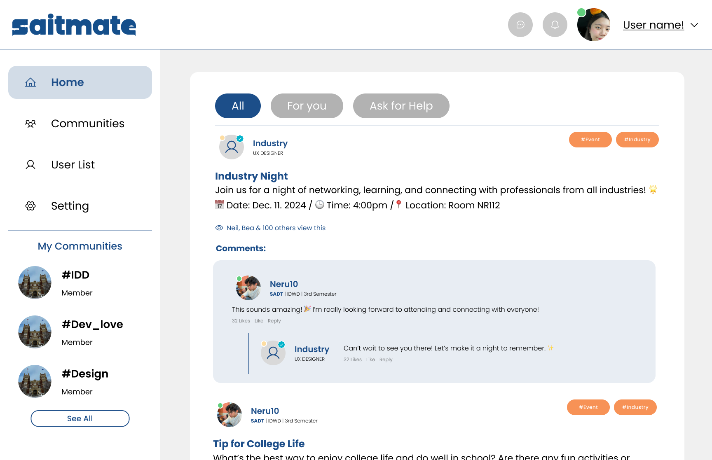
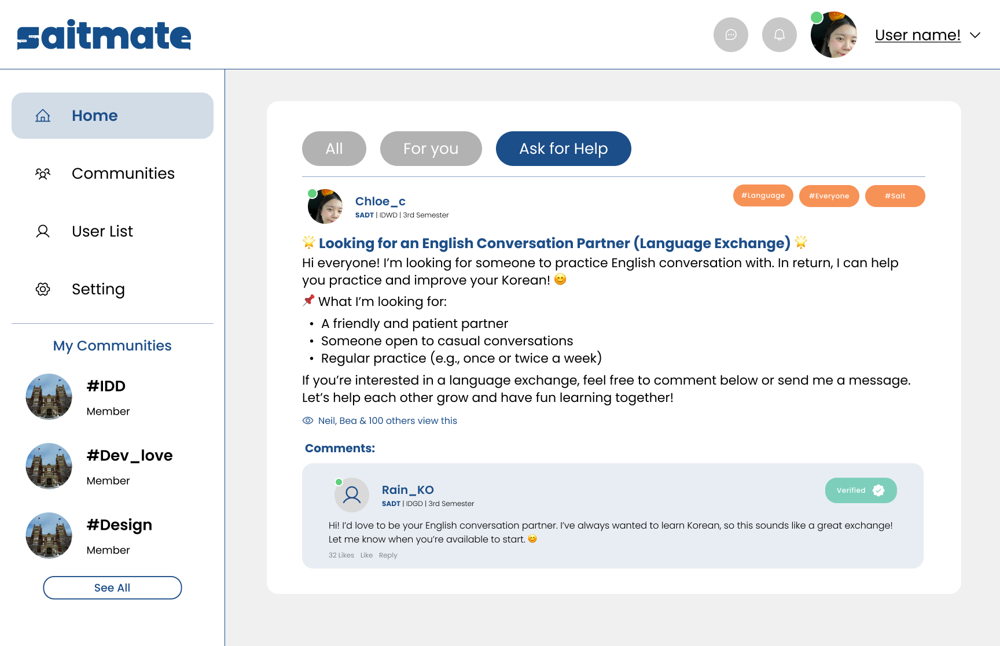

SAITMate: Bridging the Gap Between Students & Alumni
Project Overview
SAITMate is a platform designed to enhance communication and networking between students and alumni,
addressing common challenges such as:
✸ Ineffective communication channels causing delays in student activities.
✸ Lack of mid-term mentorship, especially for specialized subjects.
✸ Mismatch between student expectations and career pathways within their programs.
By fostering collaboration across programs, SAITMate helps students build connections, share ideas, and
prepare for their careers more effectively.

Identifying Core Challenges
At the start of the project, we conducted user research through surveys and interviews. Key findings
included:
🔹 77% of students struggled to find relevant contacts for networking.
🔹 Many students and alumni lacked a centralized platform for seamless communication.
Initial Concept & Limitations
Our first design focused on a basic messaging tool, but early feedback revealed missing functionalities:❌ No networking features – Users wanted tools to connect with alumni based on industry or expertise.
❌ Lack of resource sharing – No centralized location for materials and advice.
❌ Limited information filtering – Users needed better ways to find relevant content. These insights led to an iterative design process, refining the platform based on user needs.
✦Homepage with All tap
 ✦Homepage with For you tap

✦Homepage with Ask tap
Iterative Improvements
: Enhancing Through Feedback
User testing and feedback revealed critical areas for improvement
✅ 62% of users wanted an alumni directory sorted by industry and expertise.
✅ 55% preferred mentorship matchmaking based on shared goals.
✅ Many users emphasized the need for an intuitive dashboard to streamline navigation.
Key Design Enhancements
📌 Simplified Search Functionality – Added filters and predictive search, reducing search time by 40%.
📌 Feedback Rating System – Enabled users to rate responses for reliability.
📌 Real-Time Notifications – Alerts for mentorship opportunities, alumni activities, and events.
Product: A Comprehensive Solution
SAITMate evolved into a fully integrated platform with:
💬 Real-Time Chat – Instant messaging for students and alumni.
🎯 Mentorship Matchmaking – Personalized mentor recommendations.
📌 Centralized Board/Wall – A hub for networking, career discussions, and academic support.
Board Features:
✔️ All Tab – General posts, including self-promotion and networking opportunities.
✔️ Recommended Tab – Posts from students in similar programs for relevant connections.
✔️ Ask for Help Tab – A Q&A space for job inquiries, assignments, and course-related discussions.